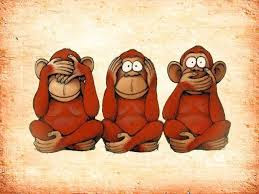

Jornada Coderetreat
Dinámica – Requerimiento en imágenes - SanSaru
Iteracion n°1
Preparativos
Armar equipos de tres personas...
- Kikazaru, el mono sordo
- Mizaru, el mono ciego
- Iwazaru, el mono mudo
Dinamica
- Iwazaru, el mono mudo, debe abandonar la sala...
- Kikazaru, el mono sordo, recibe una imagen...
- Kikazaru, el mono sordo, le explica sin mostrar la imagen a Mizaru, el mono ciego que ve, el lo escribe...
- Kikazaru, el mono sordo, abandona la sala y llama a Iwazaru, el mono mudo para que ingrese....
- Mizaru, el mono ciego, entrega lo escrito a Iwazaru, el mono mudo
- Mizaru, el mono ciego, dibuja lo que lee...
Iteracion n°2
Preparativos
Armar equipos de dos personas...
Dinamica
- los miembros del equipo se sientas de espalda entre ellos...
- Uno de los miembros del equipo recibe una imagen...
- Describe la imagen al otro miembro de su equipo
- El otro miembro, dibuja lo que le explican....
- Se pueden hacer preguntas libremente.